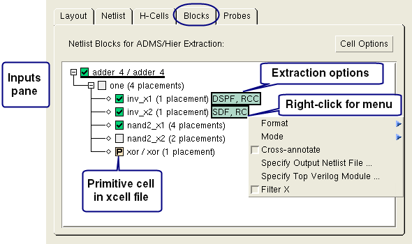

The Blocks tab
on the Inputs pane displays an alphabetical list of cells found
in the netlist files specified in the Netlist tab.
Each cell entry contains an expansion control and the number of placements
of each subcell found within its parent cell.
You can select the extraction format, extraction
mode, cross-annotate flag, and output netlist file for each extracted
cell.
A next
to a cell name in the hierarchy tree indicates that the cell is
listed in the xcell file as a primitive cell (the ‑P option), and
the cell contents will not be extracted.
Tip You can discard
changes in the Blocks tab and refresh the
view at any time by clicking the Cell Options button
in the top right corner of the tab and choosing Restore
from Xcells File and Re-read Netlist Files.
Procedure
- Click the Inputs button
on the left panel, then click the Blocks tab.
- Locate the cell you want to
specify extraction options for by expanding the tree view as needed.
If needed, click Cell Options in the top
right corner of the tab and choose Show All Cells.
- Click the cell name to mark
the cell for extraction; this is indicated with a next
to the cell name.
- Right-click in the cell name
and choose Format to choose the extraction
format.
A light green box with extraction
information is displayed to the right of the cell. Additional extraction
options are available once the format is specified.
- Right-click in the cell name
again and specify additional options as desired from the following
list:
Mode —
Extraction mode.
Cross-annotate —
Flag the cell for cross-annotation.
Specify Output Netlist File —
The output netlist filename for the cell.
Specify Top Verilog Module — Only available for SDF format. Specify
the top Verilog module for the cell. The module is passed to the
timing tool chosen in the Setup Delay Calculation dialog box. For
more information refer to “Setting Delay Calculation”.
Filter X —
Only available for SDF format. Enable this checkbox to specify the FILTERX
option for the PEX Netlist ADMS statement. The setting is disabled
by default.
Any changes in the Blocks tab
cause an asterisk to appear at the top of the pane to the right
of the “Netlist Blocks for ADMS/Hier Extraction” label. The asterisk
indicates that cell information has been modified and may be different
from what appears in the xcell file.
- Click Cell Options in
the top right corner of the tab and choose Save to Xcells/Hcells Files when
done making changes. This writes your changes to the hcell and xcell
files specified on the Inputs pane in the H-Cells tab.
The asterisk to the right of
the “Netlist Blocks for ADMS/Hier Extraction” label disappears when
your changes have been saved to the xcell and hcell files.
A view of the Blocks tab
on the Inputs pane is shown in the following figure.
Figure 1. Inputs > Blocks Tab
in Calibre Interactive PEX